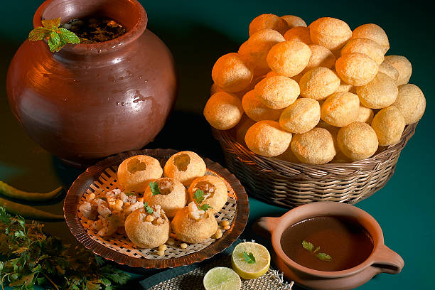
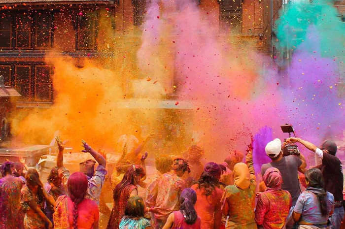
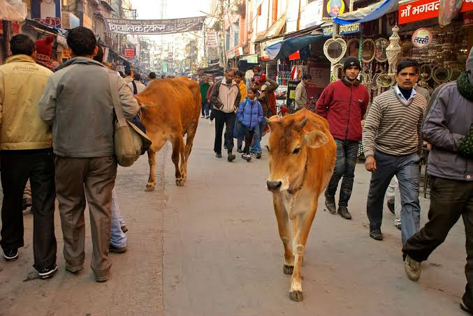

Jelajah Negara
Kenalan dengan budaya dari 4 negara pilihan.
 India
India
New Delhi • Bahasa Hindi • Rupee
India terletak di Asia Selatan dan merupakan salah satu negara berpenduduk terbanyak di dunia. Keberagamannya luar biasa: ada puluhan bahasa daerah, banyak agama, dan masakan yang berbeda di tiap wilayah. Bahasa Hindi ditulis dengan aksara Devanagari.
Sapaan: Namaste (नमस्ते) - belajar kosakata lainnya →

Pani Puri (Golgappa)
Pani Puri adalah bola adonan renyah berongga yang diisi campuran kentang, kacang arab, dan bawang, lalu disiram kuah asam pedas segar dari asam jawa dan daun mint. Makanan jalanan ini dimakan sekali suap. Selain itu, India juga terkenal dengan samosa, biryani, dan masala chai.

Holi, Diwali, dan Namaste
Holi adalah festival musim semi ketika orang saling melempar bubuk warna-warni sebagai simbol kegembiraan dan kemenangan kebaikan. Diwali adalah festival cahaya yang dirayakan dengan lampu-lampu kecil. Sedangkan Namaste adalah salam dengan menyatukan kedua telapak tangan di depan dada.

Sapi Dianggap Suci
Dalam ajaran Hindu yang dianut mayoritas penduduknya, sapi dihormati sebagai simbol kehidupan dan kemakmuran. Karena itu sapi sering dibiarkan berkeliaran di jalanan, dan dilindungi hukum di sebagian besar negara bagian.